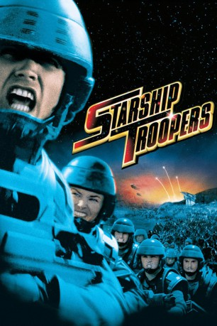
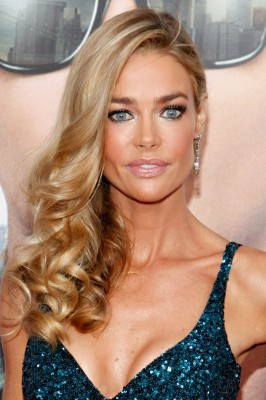
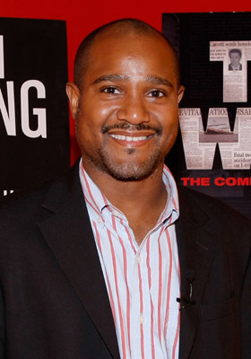
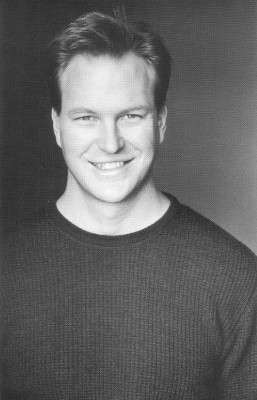
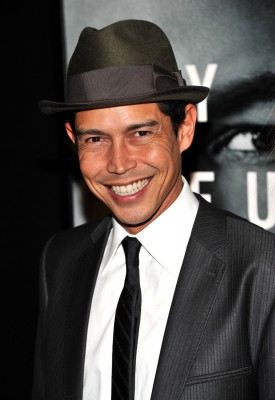
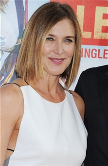

#302 Starship Troopers
Auszeichnungen: für 1 Oscars nominiert
 
 IMDB-Wertung: 7.2 / 10
IMDB-Wertung: 7.2 / 10  Metascore: 51
Metascore: 51 
In ferner Zukunft herrscht endlich Frieden auf der Erde. Einzig und allein die Einteilung in Soldaten und Zivilisten unterscheidet Menschen. Trotzdem lauert Gefahr: Killer-Insekten aus einer anderen Galaxie haben der Menschheit den Krieg erklärt. Ihr Ziel ist es, alles Leben auf der Erde zu zerstören, und ihre Angreifer scheinen unbesiegbar. Eine Armee junger Soldaten wird auf den feindlichen Planeten geschickt, um in einer letzten großen Schlacht die Menschheit vor ihrer Ausrottung zu bewahren. Unter ihnen befindet sich auch der junge Johnny Rico. Er, der einst zum Militär ging, um seiner Freundin zu imponieren, steht nun zusammen mit seinen Freunden vor einem Kampf, den keiner der Beteiligten jemals vergessen wird, denn die Starship Troopers haben ihren Gegner mehr als unterschätzt...
Jahr: 1997
Dauer: 129 Minuten
FSK: BPjM Restricted
Land: USA Studio: Sony Pictures ReleasingTonspuren: DD5.1 - ,
Untertitel:
Auflösung: 1080p (1920×1040) Größe: 11264 MB
Genre: Action, Abenteuer, Sci-Fi, Thriller
Regisseur:  Paul Verhoeven
Paul Verhoeven
Drehbuch: Edward Neumeier, Robert A. Heinlein
Soundtrack: Basil Poledouris
Darsteller:
 Casper Van Dien als Johnny Rico
Casper Van Dien als Johnny Rico Dina Meyer als Dizzy Flores
Dina Meyer als Dizzy Flores-  Denise Richards als Lt. Carmen Ibanez
 Jake Busey als Ace Levy
Jake Busey als Ace Levy Neil Patrick Harris als Carl Jenkins
Neil Patrick Harris als Carl Jenkins Clancy Brown als Sgt. Zim
Clancy Brown als Sgt. Zim-  Seth Gilliam als Sugar Watkins
- Patrick Muldoon als Zander Barcalow
 Michael Ironside als Jean Rasczak
Michael Ironside als Jean Rasczak- Rue McClanahan als Biology Teacher
 Marshall Bell als General Owen
Marshall Bell als General Owen-  Eric Bruskotter als Breckinridge
 Matt Levin als Kitten Smith
Matt Levin als Kitten Smith- Blake Lindsley als Katrina
-  Anthony Ruivivar als Shujimi
-  Brenda Strong als Captain Deladier
 Dean Norris als Commanding Officer
Dean Norris als Commanding Officer- Christopher Curry als Mr. Rico
- Tami-Adrian George als Djana'D
- Teo als Corporal Bronski
 Steven Ford als Lt. Willy
Steven Ford als Lt. Willy- Ungela Brockman als Corporal Birdie
 Greg Travis als Net Correspondent
Greg Travis als Net Correspondent Bruce Gray als Sky Marshall Dienes
Bruce Gray als Sky Marshall Dienes Denise Dowse als Sky Marshall Meru
Denise Dowse als Sky Marshall Meru- John Cunningham als Fed Net Announcer
- Robert David Hall als Recruiting Sergeant
 Amy Smart als Pilot Cadet Stack Lumbreiser
Amy Smart als Pilot Cadet Stack Lumbreiser Timothy Omundson als Psychic
Timothy Omundson als Psychic- Hunter Bodine als Young Cap Trooper
 Dale Dye als General
Dale Dye als General- Tyrone Tann als Student
- Eric DaRe als Medic
- Stephanie Erb als Young Mother
 Kai Lennox als Male Trooper
Kai Lennox als Male Trooper R. Lee Ermey als Voice heard on speaker when troopers were receiving gear for battle , uncredited
R. Lee Ermey als Voice heard on speaker when troopers were receiving gear for battle , uncredited- Mohammad Faisal als Trooper , uncredited
- Farnaz als Female Trooper , uncredited
- Michael Gerald als Football Quarterback , uncredited
 Bruce Holman als Jump Ball Referee , uncredited
Bruce Holman als Jump Ball Referee , uncredited- Richy B. Jacobs als Jumpball Player , uncredited
- Edward Neumeier als Defendant , uncredited
- Ryan O'Quinn als Jumpball Player , uncredited
- Dan Olivo als Academy Soilder , uncredited
- Julie Pinson als Female Trooper , uncredited
- Zoë Poledouris als School Prom Lead Singer , uncredited
- Joleen Sanders als Female Trooper , uncredited
- Mary Ann Schmidt als Female Trooper , uncredited
- Julia Self als Female Trooper , uncredited
 Parry Shen als Student , uncredited
Parry Shen als Student , uncredited
Datei: X:\FSK18-Collections\Starship Troopers\Starship Troopers (1997, FSKBPjM Restricted, 1920x1040).mkv seit 16.02.2015
Festplatte: FSK18
 Es gibt insgesamt 8 Filme in der Gruppe 'FSK18-Collections\Starship Troopers'
Es gibt insgesamt 8 Filme in der Gruppe 'FSK18-Collections\Starship Troopers'